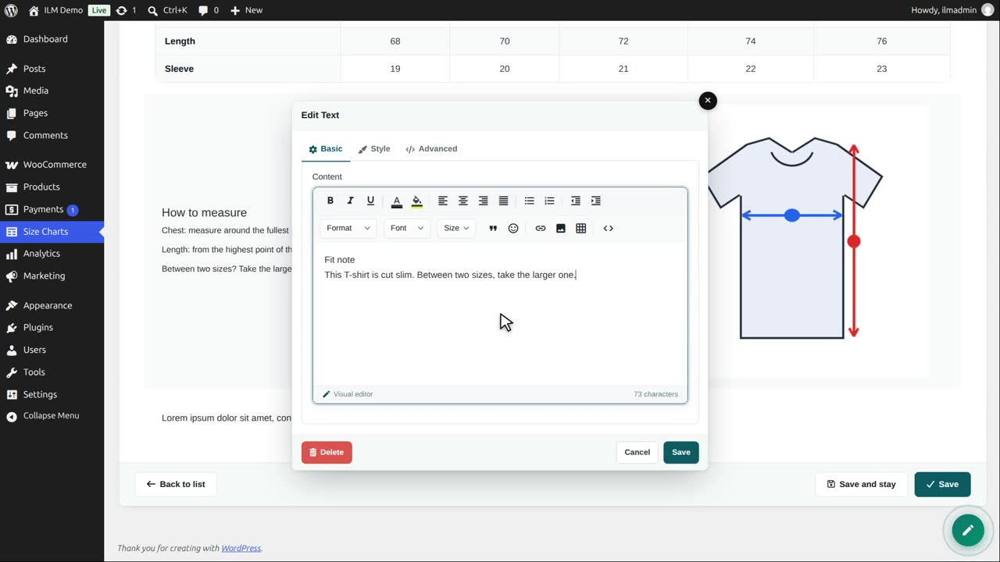
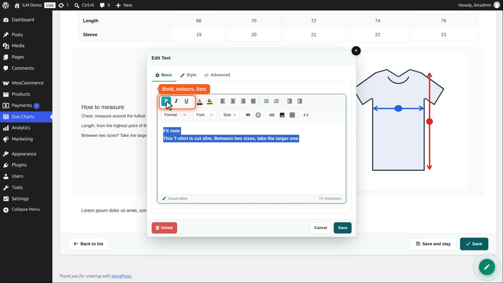
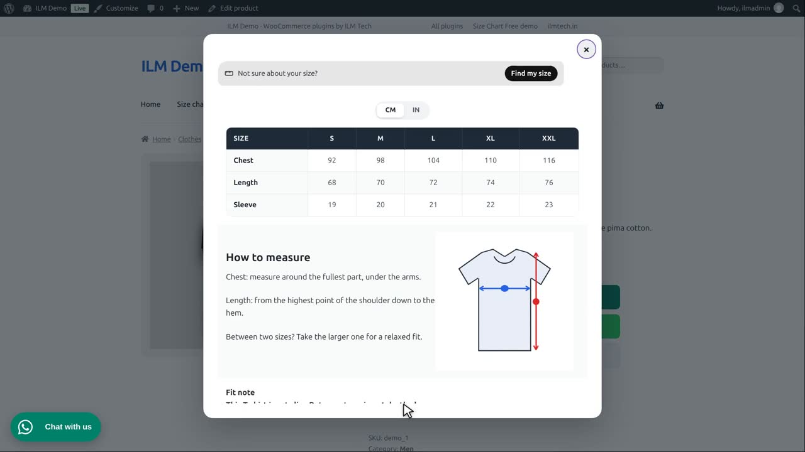

| Component | Use it for |
|---|---|
| Text Editor | Formatted text, such as measuring tips. |
Edit the chart, open the designer, click Add Row, then Click to add component, and choose Text Editor.
Type your text, like any word processor.

Select the first line and click Bold. The toolbar also has colours, alignment, lists, links, fonts and sizes.

Save the editor. The text is a new row under the chart.
Save the chart. In the shop, the note is shown under the table.

Use the text editor for measuring tips, fit notes or a short care guide next to the table.